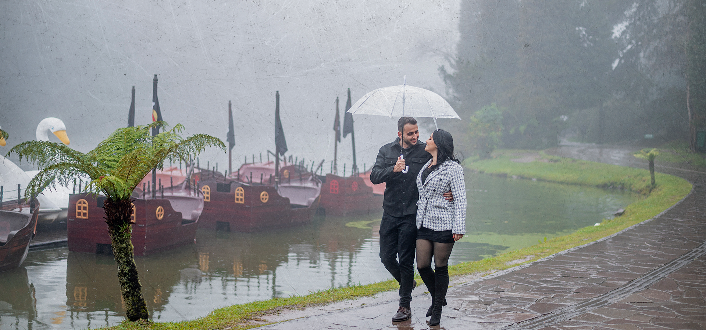
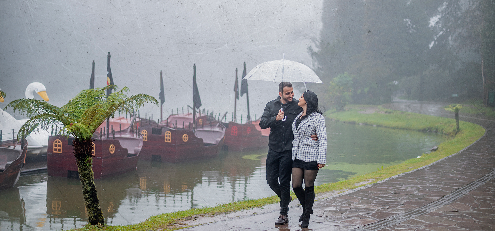

Tudo começou em um inusitado dia de plantão de vendas em um empreendimento. Letícia e Vítor trocaram conversas ao longo do dia, como se já se conhecessem há anos. No entanto, a primeira conversa não foi tão suave, pois Letícia expressou sua visão de um relacionamento ideal, enquanto Vítor refletia sobre sua própria vida. O que mais chamou a atenção foi que pessoas que trabalhavam juntas como freelancers pensavam que eles já eram um casal, embora tivessem acabado de se conhecer. Letícia se encantou com o perfume de Vítor, enquanto ele ficou cativado pela panturrilha de Letícia, seu carisma, simpatia e sorriso. Tudo parecia conspirar para uni-los, desde o início.
Seus interesses em comum, como viagens, crescimento profissional e pessoal, e suas noites especiais, como a "Quinta Love", foram a base sólida que fortaleceu seu relacionamento. Além disso, o amor pelos seus adoráveis doguinhos, Flock e Publi, é uma parte essencial de suas vidas.
Ao longo da jornada, muitos momentos memoráveis marcaram suas vidas: a primeira viagem a Carrancas-MG, o evento Protagon que mudou suas perspectivas, a decisão de morar juntos em apenas 15 dias, mudanças de casas e apartamentos, a viagem a Gramado-RS, onde ocorreu o pedido oficial de casamento, e os eventos que Letícia apresenta, que Vítor adora prestigiar. Suas sextas-feiras com almoços fora e a escolha do local do casamento foram escolhas importantes e compartilhadas.
Seus interesses em comum, como viagens, crescimento profissional e pessoal, e suas noites especiais, como a "Quinta Love", foram a base sólida que fortaleceu seu relacionamento. Além disso, o amor pelos seus adoráveis doguinhos, Flock e Publi, é uma parte essencial de suas vidas.
Ao longo da jornada, muitos momentos memoráveis marcaram suas vidas: a primeira viagem a Carrancas-MG, o evento Protagon que mudou suas perspectivas, a decisão de morar juntos em apenas 15 dias, mudanças de casas e apartamentos, a viagem a Gramado-RS, onde ocorreu o pedido oficial de casamento, e os eventos que Letícia apresenta, que Vítor adora prestigiar. Suas sextas-feiras com almoços fora e a escolha do local do casamento foram escolhas importantes e compartilhadas.


 
